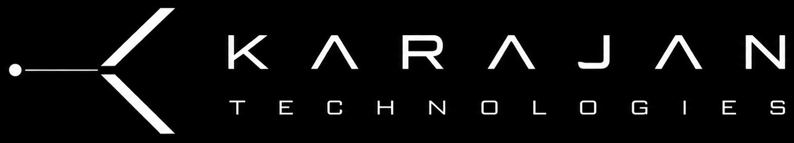
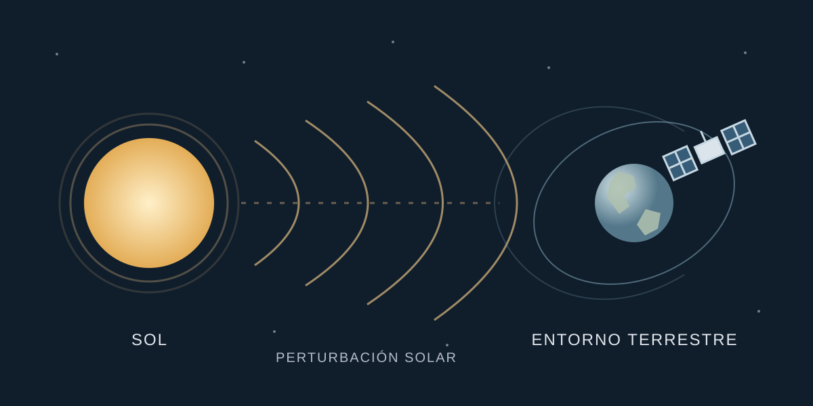
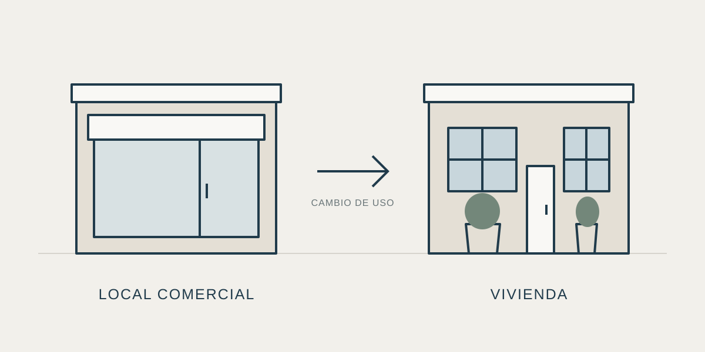
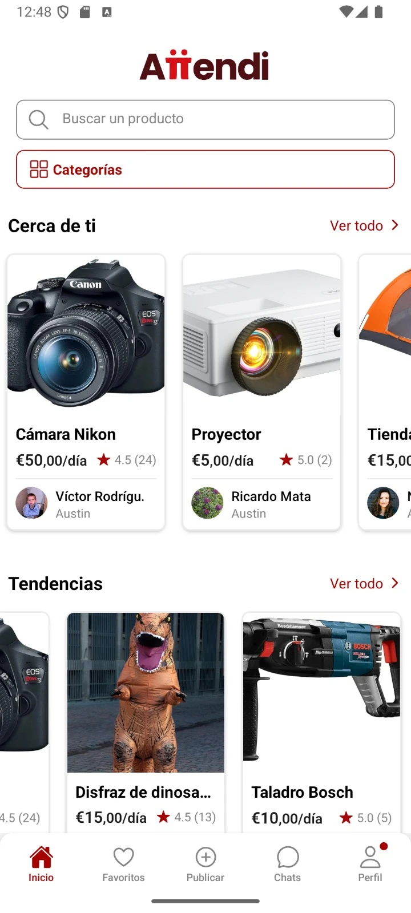
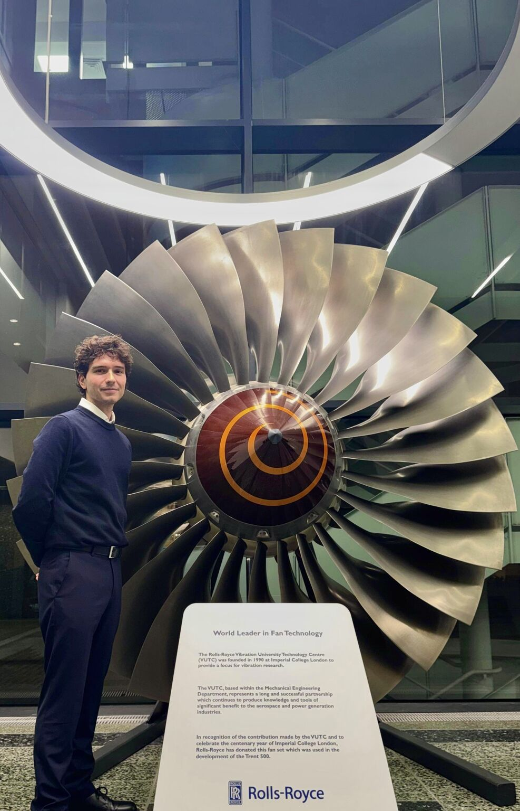
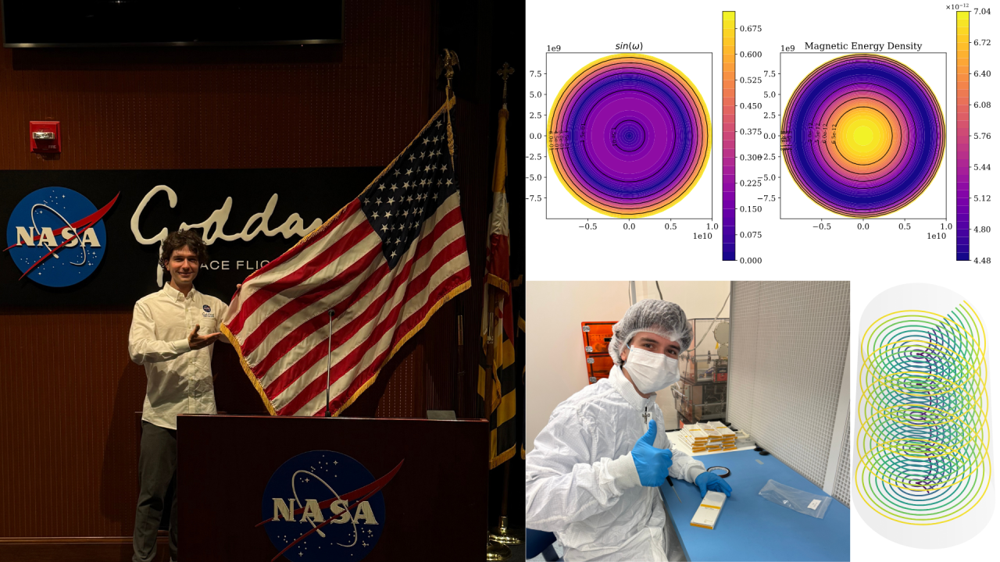
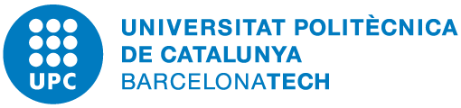

Karajan
Integración de sistemas autónomos y validación de producto.
Colaboración potencial
Conversaciones directas

Integración de sistemas autónomos y validación de producto.

Predicción de meteorología espacial para el sector satelital.

Transformación de un local comercial en vivienda.

Plataforma de alquiler para particulares y empresas.

Fricción y desgaste en materiales aeronáuticos.

Hipótesis, correlaciones y validación de estrategias.


Modelización de estructuras magnéticas del Sol.

